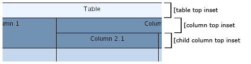
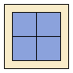
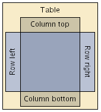
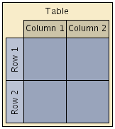
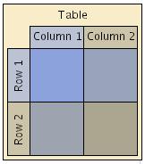

| Table Structure Model | ||
|---|---|---|
| Prev | Chapter 8. Tabular Data Presentation | Next |
Class TableGroupNodeRealizer defines
and uses a model that represents the structure of the table it is rendering.
Basically, the model comprises the rows and columns of the table.
The rows and columns may have so-called child rows and child columns, respectively,
to support nested row and column structures.
defines
and uses a model that represents the structure of the table it is rendering.
Basically, the model comprises the rows and columns of the table.
The rows and columns may have so-called child rows and child columns, respectively,
to support nested row and column structures.
Figure 8.2, “Table structure as rendered by TableGroupNodeRealizer” shows the visual representation of a table as rendered by TableGroupNodeRealizer. The table has two top-level rows where one consists of two child rows. Similarly, there are two top-level columns where one consists of two child columns. Note that there are no content nodes.
Figure 8.2. Table structure as rendered by TableGroupNodeRealizer
 |
| Table representation with several rows and columns and also child rows and columns. |
The table structure model is constituted by the types listed in Table 8.1, “Table structure interfaces”.
Table 8.1. Table structure interfaces
| Type name | Description |
|---|---|
| TableGroupNodeRealizer.Table |
Holds the top-level rows and columns of a table structure. Note that this interface inherits from both RowContainer and ColumnContainer. |
| TableGroupNodeRealizer.Row |
Models a row in a table structure. Note that a Row is also a RowContainer. |
| TableGroupNodeRealizer.Column |
Models a column in a table structure. Note that a Column is also a ColumnContainer. |
| TableGroupNodeRealizer.RowContainer |
A top-level container that can hold multiple Row objects. |
| TableGroupNodeRealizer.ColumnContainer |
A top-level container that can hold multiple Column objects. |
The main element of the table structure model is a Table instance that can be retrieved
from a TableGroupNodeRealizer using the getTable method.
The Table instance holds the top-level rows and columns of a table.
method.
The Table instance holds the top-level rows and columns of a table.
The area that belongs to a row (column) is determined by its height (width) as well as by its position with respect to the order of rows (columns). A row (column) spans all columns (rows) of the table structure, i.e., its width (height) is the accumulated width (height) of all columns (rows).
While the width of a row (height of a column) is determined implicitly, its height (width) can be set (using either the corresponding Row/Column instance directly or class TableSupport). This size, however, is restricted by the row's (column's) minimum size. In other words, a row (column) cannot be made smaller than its minimum size.
Note that the actual bounds of a row (column) cannot be set explicitly. Instead, they are determined as a result of the table structure, which means they are calculated anew by the row's (column's) calculateBounds method whenever necessary.
Figure 8.3. Insets in a table structure
|

|
| Table, column, and child column insets at the top of a table structure. |
From a geometric point of view, a table consists of its content area, which is determined by the geometry of its row and columns, and the surrounding border area. The border area is determined by the table insets, and may be used to display a table description, for example.
void setInsets(YInsets insets) |
|
| Description | Sets the table's insets. The insets define a border around the rows and columns of a table structure. A similar method to define a border around the content area of a row or column is available on TableGroupNodeRealizer.Row and TableGroupNodeRealizer.Column, respectively. |
Similarly, rows and columns also have a content area and a border area surrounding it, which is determined by corresponding row (column) insets. The content area may either contain the child rows (columns), if any, or the content nodes of the row (column). Insets for new rows and columns are adopted from the default values specified with the TableGroupNodeRealizer.
void setDefaultRowInsets(YInsets insets) |
|
| Description | Sets the default insets that are used for newly created rows and columns. The insets define minimum distances between the content nodes within a row (column) and the row's (column's) border, respectively minimum distances between the borders of child rows (columns) and the borders of its parent. |
Upon initialization, TableGroupNodeRealizer uses a model consisting of one top-level row and column. Further top-level rows and columns can be added using the Table instance, child rows or columns can be added on Row or Column instances using the methods defined in interfaces RowContainer and ColumnContainer, respectively:
Row addRow() |
|
| Description | Adds a row to a RowContainer. A similar method to add a column to a ColumnContainer is available on TableGroupNodeRealizer.ColumnContainer. |
Example 8.1, “Adding more rows and columns” illustrates a simple tabular presentation with two rows and columns together with its setup in code.
Example 8.1. Adding more rows and columns
|

|
| A minimalistic table with 2 rows and columns. |
// 'graph' is of type y.view.Graph2D. // Create a TableGroupNodeRealizer to represent the table structure. TableGroupNodeRealizer tgnr = new TableGroupNodeRealizer(); Table table = tgnr.getTable(); // Add another row and column. The table's size is now 2x2. table.addRow(); table.addColumn(); // Set insets on the table so that the rows and columns stand out. table.setInsets(new YInsets(10, 10, 10, 10)); // Get the graph's hierarchy manager, and... HierarchyManager hm = HierarchyManager.getInstance(graph); // ...create the group node to assign the previously created table realizer to. graph.setRealizer(hm.createGroupNode(graph), tgnr);
The association of a content node to a row and a column is only done on a geometric basis, i.e., the node's center coordinates determine the row (column) that it belongs to.
Row rowAt(double x, double y) |
|
| Description | Returns the row (column) at the given coordinates. |
Row getRow(Node n) |
|
| Description | Returns the associated row (column) of a content node. |
A content node can be moved to another row (column) either explicitly by moving the node geometrically, or logically in terms of the table structure using the methods below.
Row rowAt(double x, double y) |
|
| Description | Returns the row (column) at the given coordinates. |
void moveToRow(Node n, Row r) |
|
| Description | Moves content nodes to another row (column). |
The content nodes within a row (column) can be retrieved using:
NodeList getNodes() |
|
| Description | Yields the associated content nodes of a row. Note that a similar method is available on TableGroupNodeRealizer.Column, too. |
On top of the view modes that usually handle all mouse-based user interaction, class TableGroupNodeRealizer brings additional support for handling mouse gestures specific to the tabular representation of a diagram. The additional mouse gesture support covers, for example:
By default, TableGroupNodeRealizer is configured to recognize its mouse gestures, if node-specific mouse interaction as shown in Example 8.2, “Enabling node-specific mouse interaction” is enabled.
Example 8.2. Enabling node-specific mouse interaction
// 'editMode' is of type y.view.EditMode. editMode.getMouseInputMode().setNodeSearchingEnabled(true);
The actual support for handling the mouse gestures is encapsulated by a set of MouseInputEditor
sub modes that are used by class MultiplexingNodeEditor .
MultiplexingNodeEditor is registered in the TableGroupNodeRealizer's default configuration
as the implementation for the GenericMouseInputEditorProvider interface.
Table 8.2, “TableGroupNodeRealizer-specific user interaction modes” lists the MouseInputEditor implementations
involved.
.
MultiplexingNodeEditor is registered in the TableGroupNodeRealizer's default configuration
as the implementation for the GenericMouseInputEditorProvider interface.
Table 8.2, “TableGroupNodeRealizer-specific user interaction modes” lists the MouseInputEditor implementations
involved.
Table 8.2. TableGroupNodeRealizer-specific user interaction modes
| Classname | Description |
|---|---|
| TableLabelEditor |
Handles editing of row and column labels in a table rendered by TableGroupNodeRealizer. |
| TableSelectionEditor |
Selection state handling of rows and columns. |
| TableSizeEditor |
Handles resizing of rows and columns. Uses a TableSupport instance to consistently move content nodes and bends that are affected by the resizing operation. |
| TableOrderEditor |
Recognizes and handles row (column) re-parenting/reordering mouse gestures. Uses a TableSupport instance to consistently move content nodes and bends that are affected by the re-parenting/reordering operation. |
More information relating to MouseInputEditor can be found in the section called “Interface MouseInputEditor”.
Further support for drag'n'drop mouse gestures is provided by means of the DropTargetListener
implementations RowDropTargetListener and ColumnDropTargetListener
and ColumnDropTargetListener .
They facilitate convenient creation of new rows and columns, including visual feedback
for a user.
.
They facilitate convenient creation of new rows and columns, including visual feedback
for a user.
Tutorial demo application SwimlaneDemo.java demonstrates this kind of interaction and shows how to customize it. The demo also presents a way to create new rows and columns via drag'n'drop gestures.
The rows and columns of a table structure that is rendered by a TableGroupNodeRealizer can be annotated with labels. Labels can be specified to lie either within or outside the bounds of their row or column. The following methods in TableGroupNodeRealizer enable convenient label configuration:
void configureRowLabel(NodeLabel nl, Row r, boolean inside, double leftRightRatio) |
|
| Description | Configuration of row and column labels. |
Example 8.3, “Row and column labels” illustrates labels in a tabular presentation with a single row and a single column together with its setup in code.
Example 8.3. Row and column labels
|

|
| Row and column labels. |
// 'realizer' is of type y.view.tabular.TableGroupNodeRealizer. // 'table' is of type y.view.tabular.TableGroupNodeRealizer.Table. // 'labelLeft' to 'labelBottom' are of type y.view.NodeLabel. // Configuration of the two labels of the first row. // Configures the label so that it is at the left side of the row. realizer.configureRowLabel(labelLeft, table.getRow(0), true, 0.0); // Configures the other label so that it is at the right side of the row. realizer.configureRowLabel(labelRight, table.getRow(0), true, 1.0); // Configuration of the two labels of the first column. // Configures the label so that it is at the top side of the column. realizer.configureColumnLabel(labelTop, table.getColumn(0), true, 0.0); // Configures the other label so that it is at the bottom side of the column. realizer.configureColumnLabel(labelBottom, table.getColumn(0), true, 1.0);
Note that row labels at the left side are automatically rotated 90 degrees counterclockwise while row labels at the right side are rotated 90 degress clockwise.
The visual representation of a table structure rendered by a TableGroupNodeRealizer
is governed by class TableNodePainter ,
an implementation of the GenericNodeRealizer.Painter interface.
TableNodePainter delegates the actual work to subordinate painters that are responsible
for painting:
,
an implementation of the GenericNodeRealizer.Painter interface.
TableNodePainter delegates the actual work to subordinate painters that are responsible
for painting:
The background means the actual fill, the foreground means the border of a table, row, or column.
The subordinate painters are also of type GenericNodeRealizer.Painter. They can be easily replaced by custom implementations.
TableNodePainter comes with several predefined configurations. The default configuration paints the table and each row and column using a given color. The alternative configurations allow for alternating colors of consecutive columns or rows. Figure 8.4, “Row/column background rendering” illustrates the results for the predefined configurations of TableNodePainter.
Figure 8.4. Row/column background rendering
|

|

|
| Default background rendering. | Alternating background rendering of both consecutive rows and consecutive columns. |
Custom colors and line types for a configuration can be specified using an implementation
of interface TableStyle .
The implementation is set as a style property using the setStyleProperty
.
The implementation is set as a style property using the setStyleProperty method defined in TableGroupNodeRealizer's superclass GenericNodeRealizer.
method defined in TableGroupNodeRealizer's superclass GenericNodeRealizer.
Tutorial demo application TableStyleDemo.java shows how to use TableStyle implementations with the predefined TableNodePainter configurations to configure colors and line types.
The selection state of Row and Column instances can be accessed using their isSelected and setSelected methods. All currently selected rows and columns of a table structure are returned by the following methods:
Collection selectedRows() |
|
| Description | Convenience access to all selected rows or columns of the Table. |
|
Copyright ©2004-2015, yWorks GmbH. All rights reserved. |